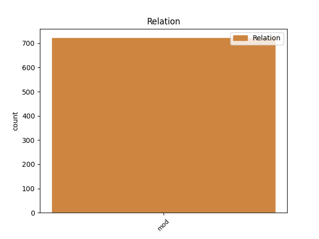
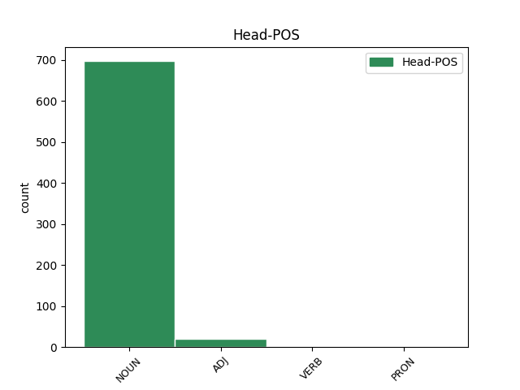
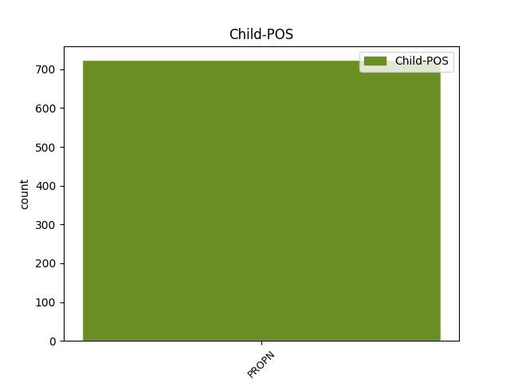

Distribution of features within this leaf



Agreement Rules sorted by frequency.
- When the dependent token is the modifer(mod) of the head token, and the head token is NOUN and the dependent token is PROPN.
1 καὶ _ _ _ _ 0 _ _ _
2 εἶδα _ _ _ _ 0 _ _ _
3 τὴν _ _ _ _ 0 _ _ _
4 γυναῖκα _ _ _ _ 0 _ _ _
5 μεθύουσαν _ _ _ _ 0 _ _ _
6 ἐκ _ _ _ _ 0 _ _ _
7 τοῦ _ _ _ _ 0 _ _ _
8 αἵματος _ _ _ _ 0 _ _ _
9 τῶν _ _ _ _ 0 _ _ _
10 ἁγίων _ _ _ _ 0 _ _ _
11 καὶ _ _ _ _ 0 _ _ _
12 ἐκ _ _ _ _ 0 _ _ _
13 τοῦ _ _ _ _ 0 _ _ _
14 αἵματος _ _ _ _ 0 _ _ _
15 τῶν _ _ _ _ 0 _ _ _
16 μαρτύρων μάρτυς NOUN Nb Case=Gen|Gender=Masc|Number=Plur 0 _ _ _
17 Ἰησοῦ Ἰησοῦς PROPN Ne Case=Gen|Gender=Masc|Number=Sing 16 mod _ ref=REV_17.6
1 Ἦσαν _ _ _ _ 0 _ _ _
2 δὲ _ _ _ _ 0 _ _ _
3 ἐν _ _ _ _ 0 _ _ _
4 Ἀντιοχείᾳ _ _ _ _ 0 _ _ _
5 κατὰ _ _ _ _ 0 _ _ _
6 τὴν _ _ _ _ 0 _ _ _
7 οὖσαν _ _ _ _ 0 _ _ _
8 ἐκκλησίαν _ _ _ _ 0 _ _ _
9 προφῆται _ _ _ _ 0 _ _ _
10 καὶ _ _ _ _ 0 _ _ _
11 διδάσκαλοι _ _ _ _ 0 _ _ _
12 ὅ _ _ _ _ 0 _ _ _
13 τε _ _ _ _ 0 _ _ _
14 Βαρναβᾶς _ _ _ _ 0 _ _ _
15 καὶ _ _ _ _ 0 _ _ _
16 Συμεὼν _ _ _ _ 0 _ _ _
17 ὁ _ _ _ _ 0 _ _ _
18 καλούμενος _ _ _ _ 0 _ _ _
19 Νίγερ _ _ _ _ 0 _ _ _
20 καὶ _ _ _ _ 0 _ _ _
21 Λούκιος _ _ _ _ 0 _ _ _
22 ὁ _ _ _ _ 0 _ _ _
23 Κυρηναῖος _ _ _ _ 0 _ _ _
24 Μαναήν _ _ _ _ 0 _ _ _
25 τε _ _ _ _ 0 _ _ _
26 Ἡρῴδου Ἡρῴδης PROPN Ne Case=Gen|Gender=Masc|Number=Sing 29 mod _ ref=ACTS_13.1
27 τοῦ _ _ _ _ 0 _ _ _
28 τετραάρχου _ _ _ _ 0 _ _ _
29 σύντροφος σύντροφος ADJ A- Case=Nom|Degree=Pos|Gender=Masc|Number=Sing 0 _ _ _
30 καὶ _ _ _ _ 0 _ _ _
31 Σαῦλος _ _ _ _ 0 _ _ _
1 Κροῖσος _ _ _ _ 0 _ _ _
2 δὲ _ _ _ _ 0 _ _ _
3 ἐπείτε _ _ _ _ 0 _ _ _
4 διαβὰς _ _ _ _ 0 _ _ _
5 σὺν _ _ _ _ 0 _ _ _
6 τῷ _ _ _ _ 0 _ _ _
7 στρατῷ _ _ _ _ 0 _ _ _
8 ἀπίκετο _ _ _ _ 0 _ _ _
9 τῆς _ _ _ _ 0 _ _ _
10 Καππαδοκίης Καππαδοκία PROPN Ne Case=Gen|Gender=Fem|Number=Sing 14 mod _ ref=1.76.1
11 ἐς _ _ _ _ 0 _ _ _
12 τὴν _ _ _ _ 0 _ _ _
13 Πτερίην _ _ _ _ 0 _ _ _
14 καλεομένην καλέω VERB V- Case=Acc|Gender=Fem|Number=Sing|Tense=Pres|VerbForm=Part|Voice=Pass 0 _ _ _
15 ἡ _ _ _ _ 0 _ _ _
16 δὲ _ _ _ _ 0 _ _ _
17 Πτερίη _ _ _ _ 0 _ _ _
18 ἐστὶ _ _ _ _ 0 _ _ _
19 τῆς _ _ _ _ 0 _ _ _
20 χώρης _ _ _ _ 0 _ _ _
21 ταύτης _ _ _ _ 0 _ _ _
22 τὸ _ _ _ _ 0 _ _ _
23 ἰσχυρότατον _ _ _ _ 0 _ _ _
24 κατὰ _ _ _ _ 0 _ _ _
25 Σινώπην _ _ _ _ 0 _ _ _
26 πόλιν _ _ _ _ 0 _ _ _
27 τὴν _ _ _ _ 0 _ _ _
28 ἐν _ _ _ _ 0 _ _ _
29 Εὐξείνῳ _ _ _ _ 0 _ _ _
30 πόντῳ _ _ _ _ 0 _ _ _
31 μάλιστά _ _ _ _ 0 _ _ _
32 κῃ _ _ _ _ 0 _ _ _
33 κειμένη _ _ _ _ 0 _ _ _
34 ἐνθαῦτα _ _ _ _ 0 _ _ _
35 ἐστρατοπεδεύετο _ _ _ _ 0 _ _ _
36 φθείρων _ _ _ _ 0 _ _ _
37 τῶν _ _ _ _ 0 _ _ _
38 Συρίων _ _ _ _ 0 _ _ _
39 τοὺς _ _ _ _ 0 _ _ _
40 κλήρους _ _ _ _ 0 _ _ _
1 δεῖ _ _ _ _ 0 _ _ _
2 μέντοι _ _ _ _ 0 _ _ _
3 τῶν _ _ _ _ 0 _ _ _
4 τινα τίς PRON Pi Case=Acc|Gender=Masc|Number=Sing|PronType=Int 0 _ _ _
5 Ἀστυάγεος Ἀστυάγης PROPN Ne Case=Gen|Gender=Masc|Number=Sing 4 mod _ ref=1.109.4
6 αὐτοῦ _ _ _ _ 0 _ _ _
7 φονέα _ _ _ _ 0 _ _ _
8 γενέσθαι _ _ _ _ 0 _ _ _
9 καὶ _ _ _ _ 0 _ _ _
10 μὴ _ _ _ _ 0 _ _ _
11 τῶν _ _ _ _ 0 _ _ _
12 ἐμῶν _ _ _ _ 0 _ _ _
Disagree Examples:
1 Ἡροδότου Ἡρόδοτος PROPN Ne Case=Gen|Gender=Masc|Number=Sing 3 mod _ ref=1.1.0
2 Ἁλικαρνησσέος _ _ _ _ 0 _ _ _
3 ἱστορίης ἱστορία NOUN Nb Case=Gen|Gender=Fem|Number=Sing 0 _ _ _
4 ἀπόδεξις _ _ _ _ 0 _ _ _
5 ἥδε _ _ _ _ 0 _ _ _
6 ὡς _ _ _ _ 0 _ _ _
7 μήτε _ _ _ _ 0 _ _ _
8 τὰ _ _ _ _ 0 _ _ _
9 γενόμενα _ _ _ _ 0 _ _ _
10 ἐξ _ _ _ _ 0 _ _ _
11 ἀνθρώπων _ _ _ _ 0 _ _ _
12 τῷ _ _ _ _ 0 _ _ _
13 χρόνῳ _ _ _ _ 0 _ _ _
14 ἐξίτηλα _ _ _ _ 0 _ _ _
15 γένηται _ _ _ _ 0 _ _ _
16 μήτε _ _ _ _ 0 _ _ _
17 ἔργα _ _ _ _ 0 _ _ _
18 μεγάλα _ _ _ _ 0 _ _ _
19 τε _ _ _ _ 0 _ _ _
20 καὶ _ _ _ _ 0 _ _ _
21 θωμαστά _ _ _ _ 0 _ _ _
22 τὰ _ _ _ _ 0 _ _ _
23 μὲν _ _ _ _ 0 _ _ _
24 Ἕλλησι _ _ _ _ 0 _ _ _
25 τὰ _ _ _ _ 0 _ _ _
26 δὲ _ _ _ _ 0 _ _ _
27 βαρβάροισι _ _ _ _ 0 _ _ _
28 ἀποδεχθέντα _ _ _ _ 0 _ _ _
29 ἀκλεᾶ _ _ _ _ 0 _ _ _
30 γένηται _ _ _ _ 0 _ _ _
31 τά _ _ _ _ 0 _ _ _
32 τε _ _ _ _ 0 _ _ _
33 ἄλλα _ _ _ _ 0 _ _ _
34 καὶ _ _ _ _ 0 _ _ _
35 δι’ _ _ _ _ 0 _ _ _
36 ἣν _ _ _ _ 0 _ _ _
37 αἰτίην _ _ _ _ 0 _ _ _
38 ἐπολέμησαν _ _ _ _ 0 _ _ _
39 ἀλλήλοισι _ _ _ _ 0 _ _ _
1 σφέας _ _ _ _ 0 _ _ _
2 μὲν _ _ _ _ 0 _ _ _
3 δὴ _ _ _ _ 0 _ _ _
4 τοὺς _ _ _ _ 0 _ _ _
5 ἐκ _ _ _ _ 0 _ _ _
6 τῆς _ _ _ _ 0 _ _ _
7 Ἀσίης _ _ _ _ 0 _ _ _
8 λέγουσι _ _ _ _ 0 _ _ _
9 Πέρσαι _ _ _ _ 0 _ _ _
10 ἁρπαζομενέων _ _ _ _ 0 _ _ _
11 τῶν _ _ _ _ 0 _ _ _
12 γυναικῶν _ _ _ _ 0 _ _ _
13 λόγον _ _ _ _ 0 _ _ _
14 οὐδένα _ _ _ _ 0 _ _ _
15 ποιήσασθαι _ _ _ _ 0 _ _ _
16 Ἕλληνας _ _ _ _ 0 _ _ _
17 δὲ _ _ _ _ 0 _ _ _
18 Λακεδαιμονίης _ _ _ _ 0 _ _ _
19 εἵνεκεν _ _ _ _ 0 _ _ _
20 γυναικὸς _ _ _ _ 0 _ _ _
21 στόλον _ _ _ _ 0 _ _ _
22 μέγαν _ _ _ _ 0 _ _ _
23 συναγεῖραι _ _ _ _ 0 _ _ _
24 καὶ _ _ _ _ 0 _ _ _
25 ἔπειτα _ _ _ _ 0 _ _ _
26 ἐλθόντας _ _ _ _ 0 _ _ _
27 ἐς _ _ _ _ 0 _ _ _
28 τὴν _ _ _ _ 0 _ _ _
29 Ἀσίην _ _ _ _ 0 _ _ _
30 τὴν _ _ _ _ 0 _ _ _
31 Πριάμου Πρίαμος PROPN Ne Case=Gen|Gender=Masc|Number=Sing 32 mod _ ref=1.4.3
32 δύναμιν δύναμις NOUN Nb Case=Acc|Gender=Fem|Number=Sing 0 _ _ _
33 κατελεῖν _ _ _ _ 0 _ _ _
1 πρὸ _ _ _ _ 0 _ _ _
2 δὲ _ _ _ _ 0 _ _ _
3 τῆς _ _ _ _ 0 _ _ _
4 Κροίσου Κροῖσος PROPN Ne Case=Gen|Gender=Masc|Number=Sing 5 mod _ ref=1.6.3
5 ἀρχῆς ἀρχή NOUN Nb Case=Gen|Gender=Fem|Number=Sing 0 _ _ _
6 πάντες _ _ _ _ 0 _ _ _
7 Ἕλληνες _ _ _ _ 0 _ _ _
8 ἦσαν _ _ _ _ 0 _ _ _
9 ἐλεύθεροι _ _ _ _ 0 _ _ _
1 ἡ _ _ _ _ 0 _ _ _
2 δὲ _ _ _ _ 0 _ _ _
3 ἡγεμονίη _ _ _ _ 0 _ _ _
4 οὕτω _ _ _ _ 0 _ _ _
5 περιῆλθε _ _ _ _ 0 _ _ _
6 ἐοῦσα _ _ _ _ 0 _ _ _
7 Ἡρακλειδέων _ _ _ _ 0 _ _ _
8 ἐς _ _ _ _ 0 _ _ _
9 τὸ _ _ _ _ 0 _ _ _
10 γένος γένος NOUN Nb Case=Acc|Gender=Neut|Number=Sing 0 _ _ _
11 τὸ _ _ _ _ 0 _ _ _
12 Κροίσου Κροῖσος PROPN Ne Case=Gen|Gender=Masc|Number=Sing 10 mod _ ref=1.7.1
13 καλεομένους _ _ _ _ 0 _ _ _
14 δὲ _ _ _ _ 0 _ _ _
15 Μερμνάδας _ _ _ _ 0 _ _ _
1 ἦν _ _ _ _ 0 _ _ _
2 Κανδαύλης _ _ _ _ 0 _ _ _
3 τὸν _ _ _ _ 0 _ _ _
4 οἱ _ _ _ _ 0 _ _ _
5 Ἕλληνές _ _ _ _ 0 _ _ _
6 Μυρσίλον _ _ _ _ 0 _ _ _
7 ὀνομάζουσι _ _ _ _ 0 _ _ _
8 τύραννος τύραννος NOUN Nb Case=Nom|Gender=Masc|Number=Sing 0 _ _ _
9 Σαρδίων Σάρδεις PROPN Ne Case=Gen|Gender=Fem|Number=Plur 8 mod _ ref=1.7.2
10 ἀπόγονος _ _ _ _ 0 _ _ _
11 δὲ _ _ _ _ 0 _ _ _
12 Ἀλκαίου _ _ _ _ 0 _ _ _
13 τοῦ _ _ _ _ 0 _ _ _
14 Ἡρακλέος _ _ _ _ 0 _ _ _